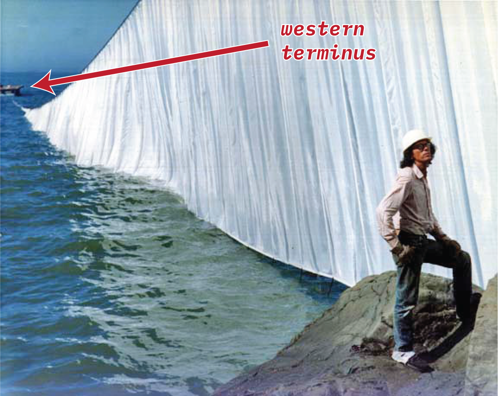

Where in the World is Christo Javacheff?
BACK
View Solution
This is a photo of artist Christo Javacheff (known as 'Christo' of artist duo 'Christo and Jeanne-Claude') standing with one of his artworks. I've been interested in this work for a long time, so I decided to look into it some more. Homework time! Find:
- The name of this artwork and its length (in km)
- The name of the body of water in this image
- The melting point of the material used (in ºF)
- The current name of the company that provided said material
- The coordinates of the (indicated) structure in the background (formally the "Western Terminus")
